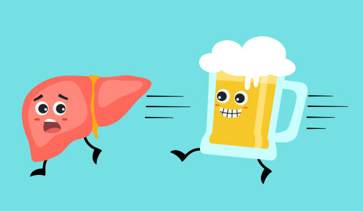
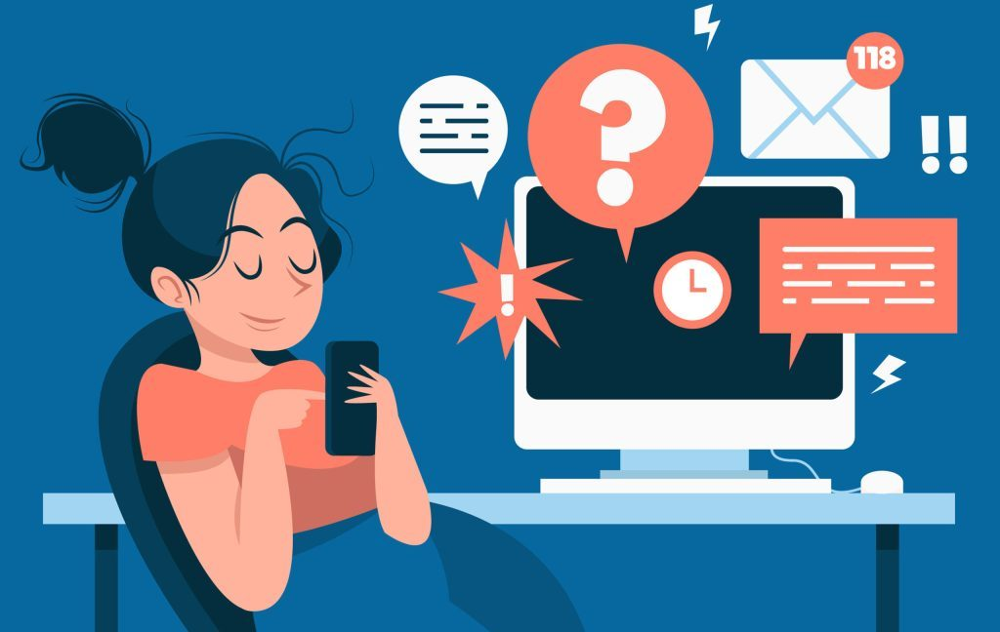

Los malos hábitos son comportamientos o acciones que son perjudiciales para nuestra salud, bienestar o
productividad.
Estos hábitos generalmente se desarrollan con el tiempo y pueden ser difíciles de cambiar:
Ejemplos de malos hábitos
1-. Fumar: Fumar tabaco es uno de los peores hábitos para la salud. El tabaco contiene sustancias tóxicas y
carcinógenas que pueden causar una serie de enfermedades graves, como enfermedades respiratorias, cáncer de
pulmón y enfermedades cardiovasculares.
2-.Sedentarismo: Pasar largos periodos de tiempo sin realizar actividad física regular puede afectar
negativamente nuestra salud. La falta de ejercicio puede contribuir al aumento de peso, debilitamiento
muscular, problemas cardiovasculares y disminución de la salud mental.

3-.Consumo excesivo de alcohol: El consumo excesivo y frecuente de alcohol puede tener efectos perjudiciales
para la salud, como enfermedades hepáticas, problemas del sistema nervioso, trastornos mentales y adicción.
4-.Hábitos de sueño poco saludables: Dormir muy poco o tener un sueño de mala calidad de manera regular
puede afectar negativamente nuestra energía, concentración, estado de ánimo y salud en general. El descanso
adecuado es esencial para el funcionamiento óptimo del cuerpo y la mente.

5-.Procrastinación: Postergar tareas o responsabilidades importantes de manera constante puede generar estrés,
ansiedad y disminución de la productividad. Además, puede llevar a una acumulación de tareas pendientes y
problemas
en el cumplimiento de objetivos.
6-.Hábitos de higiene deficientes: No seguir una adecuada higiene personal, como lavarse las manos regularmente,
cepillarse los dientes, bañarse o mantener limpios los espacios personales, puede aumentar el riesgo de
enfermedades
y afectar las relaciones sociales.
¿Que es el sobrepeso y la obesidad?
Sobrepeso
El sobrepeso se refiere a tener un peso corporal superior al considerado saludable en relación con la estatura
y la constitución física de una persona. Se determina principalmente utilizando el índice de masa corporal
(IMC),
que calcula la relación entre el peso y la altura de una persona. Un IMC entre 25 y 29.9 se considera sobrepeso.
Sin embargo, es importante tener en cuenta que el IMC es una medida aproximada y no tiene en cuenta la
distribución de la grasa o la composición corporal
Obesidad
La obesidad es una condición en la cual hay una acumulación excesiva de grasa corporal que puede tener un
impacto
negativo en la salud. Se define por un IMC de 30 o más. La obesidad puede clasificarse en diferentes grados
según
el IMC, como obesidad de grado 1 (IMC de 30-34.9), obesidad de grado 2 (IMC de 35-39.9) y obesidad de grado 3,
también conocida como obesidad mórbida (IMC de 40 o más). Además del IMC, la distribución de la grasa corporal,
especialmente la acumulación de grasa alrededor del abdomen, también puede ser un factor relevante en la
evaluación
de la obesidad.